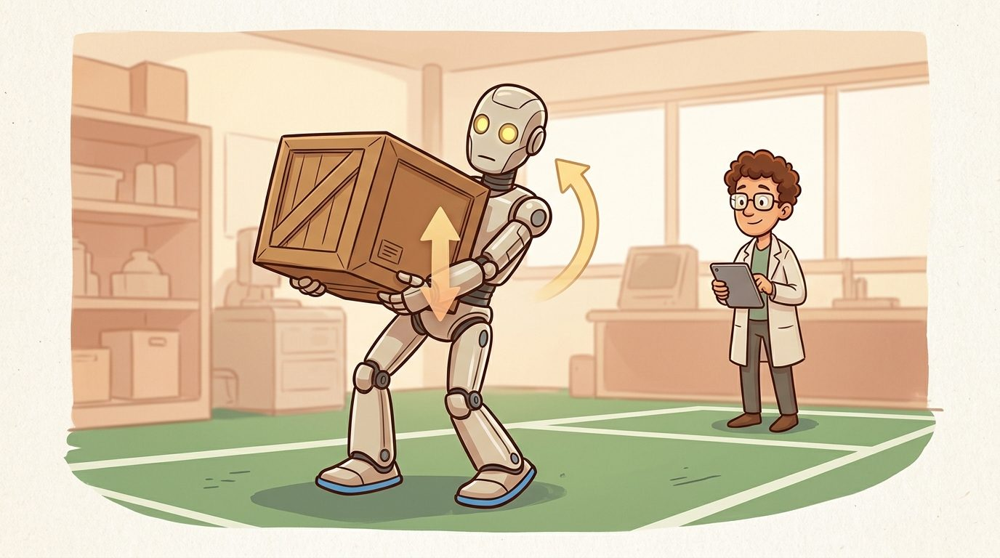
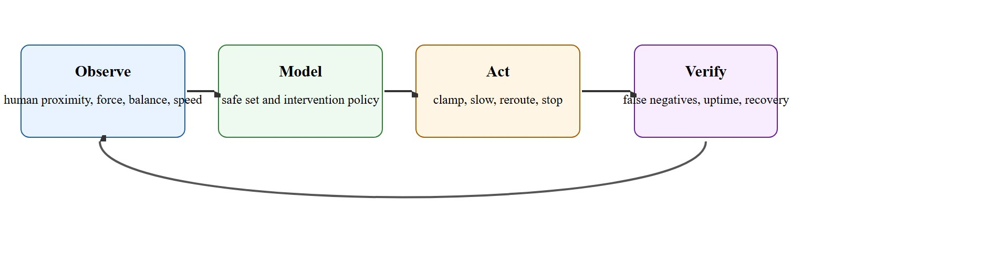

"Safety for a human-scale robot begins where optimism about the demo ends."
A Deployment Safety Review

This section applies control barrier functions introduced in section 46.3 and whole-body constraint formulations from section 46.4 to the specific demands of shared human environments. The runtime safety architecture developed here is extended in section 46.8, which adds contact mechanics and fall-recovery planning as first-class safety concerns. The full evaluation and certification pipeline for these systems is treated in section 54.2, where formal safety cases, simulation coverage, and field telemetry are combined into a deployable safety argument.
A warehouse humanoid reaches across a conveyor to hand a tool to a worker. The handoff completes cleanly in the lab, but on the floor a distracted colleague steps into the robot's sweep arc at the wrong moment. At 60 kg and moving at arm-extension speed, the robot can fracture a wrist before any task policy has time to react. Humanoids are now leaving controlled demos and entering shared spaces, which means the gap between "works in testing" and "safe at scale" is the defining engineering problem of this decade. This section builds the runtime safety architecture that closes that gap: hard constraint layers that override any nominal command the instant a safety boundary is approached, along with the sensing, logging, and recovery structure that makes those constraints reliable under real-world uncertainty.
A 60 kg humanoid swinging its arm at full extension carries enough energy to fracture a wrist in under 50 milliseconds. No learned policy can rethink its plan that fast. Human-scale safety therefore cannot be a single check; it must be a live system that fuses geometry, force, speed, contact, and runtime supervision at once, exactly as Figure 46.7A illustrates. The core challenge is that a humanoid operating near people must, in practice, keep the probability and severity of injury below an accepted bound even under worst-case sensor latency, control delay, and unexpected body dynamics; as the later discussion of sensor dropout and the open research problem in this section makes clear, no runtime architecture available today offers an absolute, zero-probability guarantee, only a rigorously validated and continuously monitored bound. Relying solely on the task policy to "be careful" is insufficient: the robot needs a hard constraint layer that overrides any nominal command the moment a safety boundary is approached. A common control-filter formulation solves $u^* = \arg\min_u \|u - u_{\mathrm{nom}}\|^2$ subject to a barrier-style safety constraint $\dot h(x, u) + \alpha h(x) \ge 0$, where $h(x)$ encodes a safe set boundary such as separation distance, fall margin, or joint-limit clearance. A robot that relies on its task policy to stay safe near people has confused good intentions with a hard guarantee: physics does not wait for inference to finish.
Think of the safe set like the dry land around a river: as long as you stay on shore, you are fine, but the closer you walk to the water's edge, the more the terrain forces you to angle your steps back inland. The control barrier function is that invisible slope pulling you away from the bank. The constraint $\dot h(x, u) + \alpha h(x) \ge 0$ says that even if the robot is already close to the edge, the rate at which it approaches must slow proportionally, so it always has room to turn around before falling in. The task planner picks the most convenient path along the shore; the barrier condition silently tilts that path away from danger whenever the edge gets too close.
For humanoids, the safe set is multi-layered. It includes reach envelopes, stop distance, contact force, pinch points, balance margin, and interaction-state uncertainty. Stop distance and contact force are quantified concretely later in this section, in the graded-slowdown worked example and the Atlas deployment case; the point here is only that all of these layers must be evaluated together, not one at a time. That is why human-scale safety must be treated as a runtime systems problem, not just a planning problem.
A common misconception is that training the task policy to behave cautiously around people is sufficient for safety, so that a "careful" learned policy removes the need for a separate constraint layer. This is wrong in the embodied AI context because a learned policy generalizes from its training distribution, and a bystander stepping unexpectedly into a sweep arc is precisely the kind of out-of-distribution event the policy has not seen. Physical momentum is irreversible on the timescale of a single sensor frame: a 60 kg torso at arm-extension speed cannot be stopped by inference. The correct mental model is that the task policy and the safety constraint layer are separate modules with different authorities; the safety layer has veto power over any nominal command and must operate at hardware-clock speed, independent of whether the policy has learned good intentions.
A nice offline policy is irrelevant if the deployed robot cannot clamp unsafe motion quickly enough when humans or contact conditions change.

Figure 46.7.1 frames the whole approach as a closed runtime loop: the supervisor observes human proximity and body state, models the safe set, acts to clamp or stop unsafe motion, and then verifies intervention quality before the cycle repeats. Safety monitoring has to operate across time scales. Fast loops catch imminent contact, torque spikes, or falls. Slower loops enforce workcell zones (the fixed physical area, and its permission rules, in which the robot is allowed to operate), task permissions, and operator confirmations. Neither layer can fully replace the other. A supervisor running at 1 kHz can clamp a command within 2 ms, keeping stopping distance under 3 cm at typical arm speeds; the same supervisor routed through an off-robot host at 100 Hz adds 10-20 ms of latency and pushes stopping distance to 15-30 cm, which is the difference between a near-miss and a fractured wrist.
Timing alone does not exhaust the problem, because even a perfectly fast loop must still reason about where the hazard lives. Humanoid safety is especially challenging because the body itself can create hazards through swinging limbs, falling mass, or unstable carried objects. A safe hand path is not enough if the torso or foothold plan creates risk elsewhere.
Once the loop is fast enough and the hazards are correctly localized, the remaining question is how to know the supervisor actually works. Evaluation should include false-negative rate, false-positive burden, intervention latency, degraded-task behavior, and post-stop recovery procedure.
So far: safety monitoring needs both a fast loop (imminent contact and falls) and a slow loop (workcell zones and task permissions), the hazard can come from anywhere on the robot's body rather than only the hand, and none of this is trustworthy until it is evaluated on false-negative rate, false-positive burden, latency, and recovery, not just on whether it stopped in time.
When two conditions fire at once, for example a human enters the stop threshold while balance margin is also low, the hierarchy resolves the conflict by always acting on whichever condition demands the more conservative command: the supervisor takes the minimum safe velocity scale across all active conditions rather than averaging or picking one arbitrarily, so a stricter constraint can never be overridden by a looser one.
A short supervisor log already shows whether a controller respects human-zone constraints without collapsing the task every time a person appears nearby.
events = [
{"human_distance_m": 1.6, "cmd_scale": 1.0},
{"human_distance_m": 0.9, "cmd_scale": 0.4},
{"human_distance_m": 0.5, "cmd_scale": 0.0},
]
stops = sum(1 for e in events if e["cmd_scale"] == 0.0)
print({"stops": stops, "events": events})Expected output interpretation. The supervisor first slows and then stops as a human approaches. That graded response is usually preferable to either doing nothing or stopping at the slightest distant detection.
Trace the supervisor as a coworker walks toward the robot. The slow-down band runs from the outer threshold $d_{\mathrm{out}} = 1.2$ m to the stop threshold $d_{\mathrm{stop}} = 0.5$ m, and the scale factor is $s = \mathrm{clip}\big((d - d_{\mathrm{stop}}) / (d_{\mathrm{out}} - d_{\mathrm{stop}}),\, 0,\, 1\big)$. The nominal end-effector speed is $v_{\mathrm{nom}} = 0.8$ m/s. Watch the commanded speed collapse as distance drops: at $d = 1.40$ m the human is outside the band, so $s = \mathrm{clip}(1.29, 0, 1) = 1.00$ and commanded speed stays $0.80$ m/s. At $d = 1.05$ m, $s = (1.05 - 0.5)/(1.2 - 0.5) = 0.55/0.70 = 0.786$, so commanded speed is $0.629$ m/s. At $d = 0.85$ m, $s = 0.35/0.70 = 0.500$, giving $0.400$ m/s. At $d = 0.60$ m, $s = 0.10/0.70 = 0.143$, giving $0.114$ m/s. At $d = 0.48$ m the human has crossed the stop threshold, so $s$ clips to $0.000$ and commanded speed is $0.000$ m/s, a full halt. The kinetic energy of a 60 kg torso scales as $\tfrac{1}{2} m v^2$, so the energy available at contact falls from $19.2$ J at full speed to $0.39$ J at the $0.114$ m/s band edge, a 49x reduction before the hard stop ever fires.
A binary stop-or-go policy fails in embodied AI because momentum is physical and irreversible. A 60 kg torso moving at 0.8 m/s carries roughly 19 J of kinetic energy. Commanding a full stop does not remove that energy instantly; it transfers the energy through joints and contact surfaces. Without graded slowdown, contact at full arm-extension speed delivers that entire 19 J to a bystander's wrist in under 50 ms. A sigmoid ramp (an S-shaped curve that tapers the speed smoothly instead of switching abruptly, like the scale factor $s$ used in the step-through below) starting 1.2 m out drops contact energy at the stop threshold to under 2 J, below the threshold for soft-tissue injury. Graded slowdown reduces the energy present at the moment of contact, keeping impact force below injury thresholds even when a sensor frame is late or a human moves faster than expected.
Mechanically, the supervisor derives a scalar factor from the current human distance and multiplies every joint velocity command by it before the command reaches the low-level controller. The factor decays linearly or along a smooth sigmoid as distance falls from the outer band to the inner stop threshold, so joint torques and end-effector speeds taper continuously. Continuous tapering keeps the balance controller stable, avoids the abrupt torque transients that trip the fall-recovery estimator, and leaves the task partially executable rather than forcing a full restart.
In published Atlas deployment trials (as of 2024), the safety supervisor runs at 1 kHz on-robot with a human-zone threshold of 1.2 m for the slow-down band and 0.5 m for full stop. End-effector speed is clamped to 0.3 m/s inside the slow band. The critical number is intervention latency: at 1 kHz the worst-case command-to-clamp lag is under 2 ms, which keeps stopping distance below 3 cm at typical task speeds. A supervisor running at 100 Hz on a separate host connected over a network link can add 10-20 ms of latency, pushing stopping distance to 15-30 cm at the same speed, which is enough to make contact with a bystander who has not yet moved.
The ISO/TS 15066 standard for collaborative robots formalizes exactly this graded-slowdown logic as Speed and Separation Monitoring, which Universal Robots implements on its UR series cobots: a SICK safety laser scanner defines warning and protective fields, and the controller scales arm speed continuously toward zero as a person enters the inner field rather than firing a single emergency stop. The same power-and-force-limiting tables (lookup tables that set a maximum allowed contact pressure and force for each body region, such as the hand versus the torso) in ISO/TS 15066 that cap contact energy by body region now anchor the safety cases for human-scale humanoids such as Apptronik Apollo on automotive assembly lines.
To verify your supervisor's true end-to-end latency, use the ROS 2 ros2 topic delay command on the safety-filtered command topic: it reports mean and max lag relative to the source timestamp so you can catch network jitter that unit tests miss. Set the qos_depth on your safety node's subscription to 1 (latest-only, not a queue) so a burst of stale sensor frames does not add artificial lag when the link recovers. If measured worst-case delay exceeds 10 ms, move the supervisor onto the onboard compute and communicate results back to the planner rather than routing nominal commands through an off-robot host.
cmd_scale stepping from 1.0 to 0.4 to 0.0 and the resulting stop count computed with a generator expression.Use ROS 2 and controller-side safety hooks, keep the nominal controller instrumented, and store intervention logs so safety cases can be replayed rather than retold.
A safety system that only counts emergency stops can look good while quietly producing too many false slowdowns or missing risky near-misses.
Control barrier function guarantees assume continuous, low-latency state estimates. In practice, depth cameras drop frames under bright sunlight, IMU-based balance estimates drift under vibration, and network-bridged supervisors add variable delay. Each gap silently widens the stopping distance. A safety architecture that was validated at 5 ms sensor latency can violate its distance guarantee at 30 ms without any code change. Treat sensor health and loop timing as first-class safety telemetry, not secondary diagnostics.
A humanoid carrying a tote past a human coworker may need to slow, widen stance, lower arm speed, and change path simultaneously. Safety is a whole-body modification, not a single checkbox.
Safe humanoids are not the ones that never stop. They are the ones that know exactly when to stop and how to recover afterward.
Three active directions are reshaping human-scale robot safety as of 2024-2026. First, diffusion-based safe motion generation: rather than filtering a nominal policy post-hoc, recent work embeds safety constraints directly into the denoising process. Berkeley's SafeDiffuser (Xiao et al., 2023, deployed and extended through 2024-2025 humanoid trials) reformulates Control Barrier Function (CBF) conditions as guidance terms inside the diffusion score function, producing trajectories that provably satisfy distance and torque constraints from the first generated sample rather than requiring a Quadratic Program (QP) correction layer. Second, world-model-grounded risk estimation: Figure AI and Physical Intelligence (pi0, Black et al., 2024) train large visuomotor policies with an explicit risk head that predicts probability of unsafe contact over a 2-second horizon from raw RGB-D input, enabling the safety slowdown to respond to predicted future crowding rather than only current proximity. Third, co-design of hardware torque limits and learned policies: Unitree G1 and Apptronik Apollo (both 2024 commercial releases) expose a dedicated 4 kHz safety co-processor that caps per-joint torque independently of the main policy CPU; recent NeurIPS 2024 work from CMU's Legged Robotics group (Kumar et al., 2024) shows that co-training the locomotion policy with awareness of these hardware ceilings reduces unnecessary safety trips by 38 percent compared to treating the ceiling as a hard post-hoc clamp. The open problem a PhD student could tackle: none of these three layers has been formally composed into a single certifiable safety argument. SafeDiffuser, risk-head policies, and hardware torque co-processors have each been validated in isolation; a unified runtime safety case that covers sensor dropout, policy distribution shift, and hardware fault simultaneously under a single probability-of-injury bound remains an open and tractable PhD-scale problem.
What metric would tell you your supervisor is too permissive, and what metric would tell you it is too conservative?
This section is where embodied AI becomes accountable. A safe system is not merely one with lower reward or lower speed. It is a system whose intervention logic is explicit, measured, and replayable.
Every architecture covered in this chapter, from whole-body controllers in section 46.3 to dual-system foundation models in section 46.6, should be evaluated through the lens of human-zone uncertainty, stop distance, and recovery procedures.
| Tool or Library | Role in the Topic | Builder Advice |
|---|---|---|
| ROS 2 safety and logging hooks | Runtime intervention recording | Make intervention causes structured, not free text. |
| Whole-body controller limits | Fast torque and balance protection | Safety cannot live only in the planner. |
| Simulation replay | Evaluate human-zone and fall scenarios safely | Promote every serious near-miss into the replay suite. |
This section prepares for safety validation and connects to teleoperation and whole-body dynamics.
Design a safety supervisor for a humanoid carry task in a shared workspace. Include graded slowdown, stop logic, and a restart procedure.
Most safety failures come from missing runtime context, missing intervention labels, or badly placed control authority. Put the guard where the unsafe command can actually be blocked.
Beginner (weekend): Graded safety supervisor in simulation. Build a proximity-based velocity scaler for a simulated robot arm in PyBullet or MuJoCo: publish joint velocity commands through a ROS 2 node that reads a dummy human-position topic and scales commands linearly from 1.0 to 0.0 as distance falls from 1.5 m to 0.5 m. The key challenge is logging every intervention event with a structured cause label so you can audit false-positive rate rather than just counting stops.
Intermediate (1 to 2 weeks): CBF safety filter for a whole-body controller in Isaac Lab. Implement a control barrier function layer on top of a pre-trained locomotion policy in Isaac Lab: define h(x) as the minimum distance between any robot link mesh and a randomly placed human capsule, solve the QP filter at each control step using a Python binding to OSQP (an open-source solver for the quadratic programs that this constraint layer must resolve every control tick), and verify that the robot completes a point-to-point navigation task while never violating the 0.4 m safety margin across 500 randomized human-placement episodes. The key challenge is keeping the QP solve under 2 ms on CPU so it fits inside the 1 kHz control loop without introducing latency that widens stopping distance.
Boston Dynamics Atlas product page. https://bostondynamics.com/products/atlas/
Relevant official framing because Atlas is positioned for industrial human environments.
GR00T Whole-Body Control documentation. https://nvlabs.github.io/GR00T-WholeBodyControl/
Current whole-body stack reference where runtime limits and control interfaces matter.
Drake project. https://drake.mit.edu/
Useful model-based platform for safe-set and verification reasoning.
Human-scale robot safety is a live control and monitoring problem, not a disclaimer attached after the demo.
Write the safety monitor specification for a humanoid moving a load through a shared aisle. Include the safe-set variables, intervention order, false-positive metric, and post-stop recovery rule.